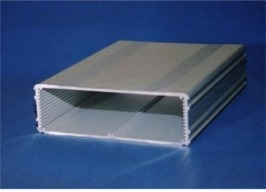

Recently we have been thinking about what changes and new features would be good to have in the new version of the emonTx.
The general idea is that the next version will be pre-assembled with SMT electronics, we plan to keep the current features such:
- Arduino compatible Atmega 328 running at 3.3V
- RFM12B wireless
- 3 x CT channels
- Pulse counting - digital I/O
- low power
New features we are considering adding are:
Wireless:
- Xbee socket option, could also be used for WiFly Rover networks wifi module or XRF for extra range– RFM12B will still be the default wireless option.
- Option to use SMA antenna
Sensor connections:
- Terminal blocks for connecting eight DS18B20 temperature sensors - horizontal insertion?
Indication & buttons:
- Tri-colour indicator LED – green = good, red = bad (low battery etc..)
- Push button to be configured for pairing
- Reset button?
Power
- 3.7V Lipo battery compatibility – with USB charging (MAX1555 / MCP73833 or MCP73871 control IC?) JeeNode example, adafruit example
- Option to power from mini solar panel for remote installations - Adafruit example - need to check that switching frequencies from DC-DC converters don't interfere with analog CT readings.
- Option to fix 2xAA battery holder onto rear of PCB
Casing
Size the PCB to slide into an aluminum case such as the one below. An acrylic/ply-wood fascia can then easily be laser cut the accommodate the ports. See blog post on embodied energy of Aluminium Vs ABS plastic:

It would be great to hear your thoughts on our ideas.....
Re: emonTx New Version Dev Ideas
My opinion is that remote sensors must be as cheap as possible and the fancy staff will be at the internet-connected module - a Raspberry Pi for example. The WiFi or Zigbee stuff is good, but pricey and I personally wouldn't use it. I'd love to see dedicated micro sensors (attiny series) all around the house reporting things to the Raspberry Pi. Hopefully, there will be a LAMP port for it one day and it may host emoncms as well, so no need to have external hosting.
Re: emonTx New Version Dev Ideas
Yeah I agree, the idea we have is to add an Xbee holder onto the board but by default this would be un-populated, RFM12B is the cheapest option. We are trying to make the hardware as flexible and future proof as possible.
Re: emonTx New Version Dev Ideas
I really like the idea of adding more DS18B20 sensors. Is it worth exploring if other environmental sensors could be added as well or does that change the intention for the project? thinking of a counting module? humidity?
Re: emonTx New Version Dev Ideas
I like the idea of a IR sensor to read the data from electric meters with IRDA senders in them
Re: emonTx New Version Dev Ideas
I also think the aluminum casing suggested in post one will act as a shield to RF waves and may reduce and even cease signals. Give it a try.
Re: emonTx New Version Dev Ideas
Could you use the case as an aerial? Or is that a crazy idea as im finding the range of the current RF to be VERY small. Eg through 1 wall only.
Humidity sounds like a great idea although it may have to be a remote sensor not built on this maybe better suited to the GLCD. The DHTXX are worth a look at, iv got a couple im using to monitor inside and outside.
Gas meters. Could this be done. If were trying to monitor our energy consuption gas should be a part (although this may be a problem with regs)
Re: emonTx New Version Dev Ideas
I would like to see more CT input channels. The Brultech http://www.brultech.com/ energy monitor has 7 inputs and they are developing a new model with 32. More input channels allow you to monitor every individual circuit in your house.
Re: emonTx New Version Dev Ideas
I like this IR sensor idea but most times the emonTx will be a good distance from the electric meter. Anybody know how far you could run the wires and still get a good pulse from the IR sensor?
Re: emonTx New Version Dev Ideas
Here is what I think is the future for remote sensors, here is one temperature sender using ATTiny85's internal temperature sensor and RFM12B on the bottom; The PCB and schematic seem different from the end product but the idea is nice, coin cell sized battery operated remote sensor. Give that I2C connectivity (supported by Attiny84) and it is irresistible
http://olivier.gelux.ch/?q=taxonomy/term/41:
Re: emonTx New Version Dev Ideas
Leaving out the burden resistor in SMD but keep the possibility to add it later on for using different types of CT would work for me.
Re: emonTx New Version Dev Ideas
1 extra CT-sensor would be great, you could use, 3 for mains consumption (one per fase) and one for a PV system. An rs232/485 port for communication with an invertor would be a big plus. The tri-color led is a good feature to expand the feedback possibilities om the print.
A DIN-rail housing might be handy to use, it would fit into a household switchboard/fusepanel, and has lots of possibilities for connectors etc.
Re: emonTx New Version Dev Ideas
Thank you for all the ideas. Sorry for the delay in posting, Trystan and I have been travelling this last week. We now have stable internet, normal operation is resumed!
Case and antenna:
The idea is that we external SMA whip antenna would be used with the aluminium case. Such as http://cpc.farnell.com/jsp/level5/module.jsp?moduleId=cpc/407338.xml, that way the case won't effect the signal. I think the range could be improved be using a whip antenna since it's RF output is helical not as much RF power is lost upwards and downwards. We have had a bit of a debate going regarding the embodied energy in Aluminium, I did a blog post on this last night: http://openenergymonitor.blogspot.com/2012/05/embodied-energy-of-electronic-enclosure.html
Sensors:
Humidity sensors are interesting, I have experimented using the DHT11 humidity sensor, this sensor requires 3-5V and a single data line pulled high with a 5K resistor. It wouldn’t be difficult to wire in the sensor either into a JeePort or the pulse counting I/O. I'm not sure if humidity is important enough to merit it's own dedicated port on the emonTx.
Form factor:
I like the idea of lots of low power, small and cheap sensors such as the design posted by mharizanov. This form factor would be ideal for a distributed wireless temperature network. The emonTx however will need to larger to accommodate the number of I/O ports required.
Burden Resistor:
Great idea posted by prensel regarding having an interchangeable burden resistor for different CT's and measurement ranges. I think the best compromise is to have an SMT burden resistor and include the holes and pads to solder in a thru-hole burden resistor and de-solder the SMT if required.
Number of CT channels:
I think three is a good number, we haven’t really needed extra channels, the limiting factor is board space for any extra 3.5mm jacks, more channels would also increase the cost and probably only be utilised by a few users. If more channels are required it's quite easy to have multiple emonTx's on the same network. If there is free space I'll see if it's possible to squeeze one extra channel on.
Re: emonTx New Version Dev Ideas
Or even easier: a cuttable re-solderable link to the SMT burden.
(N.B. Bad link to the aluminium case blog).
Re: emonTx New Version Dev Ideas
Yup that would be even better. I think I will also do the same for the DS18B20 temperate pull up and pulse counting pull down resistors to add the flexibility of changing their values.
Link has been fixed, thanks.
Re: emonTx New Version Dev Ideas
There are cases where an ethernet port is available next to where emonTx is installed. We can avoid the RF link and have the footpring for an ethernet module like this one on emonTx: http://de.mouser.com/ProductDetail/WIZnet/WIZ820io/?qs=b%252bXOOdUOuvbhJrgcuv9kFavdJpKDMM33eUcvAcab6Bc%3d
it's just 12 pins = two 6pins headers
Re: emonTx New Version Dev Ideas
That's a great idea! I like that little Wiznet module. It's used on the Open Kontol Gateway, it's really tidy. Adding the headers will keep the connectivity options open with no extra cost.
Cheers Amin.
Re: emonTx New Version Dev Ideas
It would also be great to breakout two or three digital outputs (with PWM) on the side of emonTx board to screw terminals. I know the firmware does not allow it now, but we could add code in the future that makes it possible to control external relays mounted in the electrical box.
Re: emonTx New Version Dev Ideas
I agree that adding terminals or solder pads for other I/O would be good. Personally I am trying to use a digital input for monitoring pulses from a water meter (to record hot water usage), and a couple of inputs for temperature and humidity (inside and outside) so the system can calculate dew point and indicate when best to open windows as the humidity drops outside.
Re: emonTx New Version Dev Ideas
Rather than the aluminium case, could you use a PSU 'wall-wart' case (Like Maplin N04KH) and hack a 5V PSU from a phone charger into it, leaving space on a second level for the TX board.
Re: emonTx New Version Dev Ideas
I fancy the optional wireless header & Ethernet suggestion :)
But this kind of imposes equivalent upgrades to the emonBase and emonGLCD, right?
For power I'm planning on using Seeed Studio's Lipo Rider Pro, while there is no integrated solution. If you want, I can perform some tests to verify any impact resulting from interference caused by the DC-DC boost converter. However I don't predict any visible impact, since we already power our emon devices with switched-mode power supplies. Unless the proximity of such circuitry could have a different impact.
Four CT channels would be awesome, but please clarify, were these CT channels designed to separate energy consumption by type, rather than by phase? i.e. lighting / heating / devices within the *same* phase
I'm concerned as to how I can measure power usage on 3 distinct phases accurately, when we only have one AC input from the AC-AC transformer (Each phase has its own fluctuating voltage. Is my assumption correct?). And if space is a concern for an extra CT connector, I can't begin to imagine if we talked about extra AC inputs. But then again, I don't have three outlets installed next to each other and each with a different phase; maybe one needs to place the outlets right in the electrical board, and plug the transformers there?
I'm building the current version of emonTx very soon, it's probably best that I avoid further commenting before I spend some time with it ;)
Re: emonTx New Version Dev Ideas
Yes, in the ideal world where everything is perfectly balanced, all three phase voltages would be the same. But in the real world you are correct, different loads on different phases will cause the three line voltages and the neutral voltage to move relative to each other and to earth.
I imagine few people do. I would have concerns over safety in a domestic environment with up to 440 V between any two lines.
Re: emonTx New Version Dev Ideas
Hi!
I have recently buyed an Emontx + Nanode, and my goal is to measure currents and all the data possible on three phase installation in order to have the system in more "professional way".
I'm not sure if hardware will permit this, or maybe there's the need of small hardware tweaks, maybe one transformer and CT for each phase??
Regards, and excuse my English
Re: emonTx New Version Dev Ideas
To accurately measure voltage, current, real and apparent power on each of 3 phases you need to have 3 voltage inputs and 3 current inputs, therefore 3 voltage adapters and 3 CTs.
The EmonTx does not have the necessary 3 voltage inputs. But two analogue inputs are not used - ADC 4 on pin 27 and ADC5 on pin 28, I think it would be possible for you to repeat the circuit components that measure voltage (R11, R12, R13, R14, C10) two times on an external board and connect to these pins. I have to tried to do this, so I do not know whether it would work.
[Edit]
I modified a copy of EmonLib and wrote a test sketch to measure the voltages on ADC4 and ADC5 - these are available as SDA and SCK on the PWR/SER/I2C header on the EmonTx board. To test, I placed a jumper wire between P3 - AIO2 (the voltage input) and SDA or SCK, and I read the correct voltage. So I think it will work.
Re: emonTx New Version Dev Ideas
Hi Robert
Hi have the needed components to make two extra inputs, if my work permit I will try to duplicate the inputs and see...
Many thanks!
Re: emonTx New Version Dev Ideas
You will of course need to make a copy of EmonLib and edit it to (a) add the correct input pins for the new voltage inputs and (b) pair them with the correct CT to calculate the powers, possibly each with its own calibration factor and phase angle correction.
Re: emonTx New Version Dev Ideas
Am I right that in Europe (well, the UK specifically), we only need one voltage input (alongside the current measurement) in order to calculate real power from apparent?
Re: emonTx New Version Dev Ideas
You are right
Re: emonTx New Version Dev Ideas
The ultimate emonTx would have headers for an ethernet module, digital programmable outputs (screw terminals) but also something very important: I think there should be the possibility to connect up to 3 emonTx slaves to an emonTx master that would have ethernet connectivity.
This is the case for example when you have a massive circuits breakers board and you want to install more than 4 CTs, then one emonTx would have Ethernet (or maybe RFM12B), one AC voltage sensor, and would be connected over I2C to 1, 2 or 3 other emonTx's. The master would measure Vrms, 4CT's and communicate the Vrms value over I2C to slaves.
Slaves would have up to 4 CT's connected to them, no connectivity options other than the I2C communication with the master. This would take only two pins and one resistor.
Five connections must be made between the master and the slaves: SCL, SDA, GND, Vin and reset. I can imagine that a normal RJ 45 connector would be suitable.
With this we can have a very modular system that is also suitable for bigger installations
Re: emonTx New Version Dev Ideas
Hi, first post on the forum. I have been following your project for some time as I am searching for a good way to monitor my total energy use and production (PV panels on the roof). So far I have not yet found the perfect solution, so may I add some ideas for the next emonTx.
Additional pulse inputs
This would be great to measure all energy use. At least in the Netherlands we have a sort of 'E-closet' where electricity, gas and water enters the home. The last 2 can best be measured using pulse sensors. Additionally a pulse input could be used to differ between high and low electricity tariff, if applicable for some people (including myself).
So in short: 3 pulse inputs would be well appreciated
Offline local storage
Using a SD-card on the emonTx would give the opportunity to store the data locally, have it run fully autonomously, and retrieve data later. Possible setup could be like making data-files for each day, read those files on a local networked computer once a week and input that in a database. So no live view (which can be retained using the RFM12B anyway), but data-processing later.
Retain 1 open Jeeport
Jeelabs has wonderfull extension plugs available. If you could leave one Jeeport open, people can extend the emonTx with these plugs as required.
So far for my ideas. Any comments are appreciated.
Re: emonTx New Version Dev Ideas
I'm interested in helping out with the hardware. Let me know if you want anything tested or prototyped.
Matt
Re: emonTx New Version Dev Ideas
Hey people,
I needed an SMD version of emonTx, but with an ATMega 328, arduino shields compatibility and 4 CT's, so the new A32u4 based emonTx doesn't suit my needs.
This is my attempt to make an SMD emonTX with my above requirements (see attached schematics and board). I still need to include a master-slave method to interconnect several emonTx's, but I alreay had a hard time routing this board. It is more like an exercice to get a working SMD microcontroller design. All credit goes to the Arduino team, Trystan, Glyn and JCW of Jeelabs.
My final board will probably have a different layout and a master-slave bus.
If you have any comments or suggestions please share them :)
Re: emonTx New Version Dev Ideas
Very nice board, I would like to have one (I need 4 CTs)!
One question:
- how is the WIZ820 powered when it is mounted? I think it draws quite a lot of current (>100mA?). The power dissipation can possibly not be handled by the SOT23 version of MCP1703 and R5 would also prevent this.
Regards, Jörg.
Re: emonTx New Version Dev Ideas
Hey Jörg,
I also had my doubts about that, even though the datasheet says it can supply up to 200mA. I'll get one pcb made and test it, then maybe I'll have to choose another regulator or another resistor.
Now that I think about it, so you think another package than 0603 is more suitable for that resistor?
Re: emonTx New Version Dev Ideas
The original value of R5 56 Ohms was calculated for the Emontx power consumption without the extra 100mA of the WIZ820. Since the input is AC, C5 has to deliver the consumed current for roughly one periode means 20ms, until it is recharged again. The values for C5, R5 have to be recalculated for the much higher consumption with the WIZ820 module. This also depends on the voltage of the wall transformer.
Question is if the distortion of the input voltage is still within acceptable limits then. Perhaps Glyn could test this with his LTSpice simulation.
For the MCP1703 you could choose the SOT223 package which has a much lower thermal resistance and try to dump as much heat as possible into the GND plane.
Re: emonTx New Version Dev Ideas
I think my post here is on the same topic: http://openenergymonitor.org/emon/node/736#comment-5623. Good effort Amin, I'll get back to you with my thoughs on your design soon. Sorry, things are very busy at the moment. I need to get some sleep now.
Re: emonTx New Version Dev Ideas
Hello Joerg,
your guess was right! Even with an R5 value of 10R and a C5 of 470uF the MCP 1702 (that's what I'm using, but I didn't have the corrsponding eagle part), this power supply can not provide more than 126mA, which is too little.I noticed that the waveform distortion is not that important (very negligeable actually) even with a 126mA load. I have doubts that this is wrong.
I think a full wave rectifier design is necessary to power the extra modules (ethernet, etc), I'll do some reading and try to come up with an acceptable design.
I will share it here on the forum, or on a new topic. All help is appreciated, since I didn't do this before.
Re: emonTx New Version Dev Ideas
Main dilemna now is the choice of a regulator: Low-dropout regulator, or switching regulator. The latter heats up less, which may be a decisive factor here.
Any thoughts?
Re: emonTx New Version Dev Ideas
This regulator seems to be adequate: STMicroelectronics LF33CDT (Datasheet)
Especially these characteristics:
Output current: up to 500mA
Input voltage:16V
Should do the trick with a full wave rectifier no?
Re: emonTx New Version Dev Ideas
Amin Zayani
You cannot go to a full-wave rectifier without one of:
If you try to use a single winding transformer and a bridge rectifier, one way or another you end up shorting part of the bridge. (That's what Mark Beal's circuit, that was picked up and promoted elsewhere, did, with as a consequence a voltage wave that bore little resemblance to what came out of the power station!).
The whole purpose of the single supply was to remove the need for those things and the separate 5 V supply. If you want to have a high-powered radio or Ethernet, or multiple temperature sensors, then the single supply is simply not appropriate and was never intended for that purpose.
Re: emonTx New Version Dev Ideas
Amin,
the LF33 is a good choice although with a much higher quiescent current than the MCP1702. It is easy to use, does not need too much C on the output and the package allows for easy cooling.
If you want to keep the MCP1702 you could just use a second one for powering the WIZ820.
But Robert is certainly right with his remarks regarding the limitations of the single supply (and that the full wave rectified version will not work).
Re: emonTx New Version Dev Ideas
Robert, Joerg,
thanks for your comments. I am aware of the complications of using a full wave rectifier design, I'll try to find a center tapped design for later versions, for the moment back to the drawing board with 2 MCP 1702 in mind. I'll post my simulation files tomorrow.
Re: emonTx New Version Dev Ideas
Your problem will be finding a centre-tapped adapter. Your alternative is an on-board transformer that needs to remain well out of saturation at the UK maximum voltage of 253 V, and then you still have the attendant clearance problems etc.
Re: emonTx New Version Dev Ideas
.... with 2 MCP 1702 ...
I think this is a good idea (well known parts, keeps the number of different parts low, scalable, etc.). And please give them a bit of copper area (connected to one or several pins) where they can sink the heat. GND plane can also be used for this. Keeping the temperature low improves reliability and reduces output voltage drift.
Re: emonTx New Version Dev Ideas
This is my last attempt with only one MCP1702:
R5= 10 R, C1= 470uF and that should be good for a load of 120mA as shown in the simulation graph:
The AC adapter I use supplies up to 830mA so it shouldn't be the bottleneck. I just need to choose the right resistor, capacitor, and regulator packages for such an application.To my surprise, the waveform is not very much disturbed. Any thoughts on this one?
I uploaded the LTspice file (credt goes to Glyn) here if you need to experiment with it.
I have another thought in mind: what happens if a DC adapter is connected instead of AC? My educated guess is that it will also work properly. What do you think?
Re: emonTx New Version Dev Ideas
"what happens if a DC adapter is connected instead of AC? My educated guess is that it will also work properly."
Sorry, a bad guess and wrong. If you rectify the a.c., you won't be able to tell the difference between imported and exported power because you won't know the relative phase of voltage and current. And if your d.c. supply has a smoothing capacitor inside (most have), you've lost the ability to calculate true power too (for that, you need the average of the product of instantaneous voltage and current).
So you have at best a voltage that has some relationship to the peak voltage, and you can only get an estimate of VA with no knowledge of whether it's import or export.
"To my surprise, the waveform is not very much disturbed." - Yes, that's because you are taking the same energy over a longer time and drawing a lower current, hence the internal drop in the transformer (from both copper and iron) is less. A higher VA rating helps here with a lower source impedance, but it has no connection with the inherent distortion of the voltage waveform that arises from saturation effects in the tranformer core.
Re: emonTx New Version Dev Ideas
"Sorry, a bad guess and wrong. If you rectify the a.c., you won't be able to tell the difference between imported and exported power because you won't know the relative phase of voltage and current. And if your d.c. supply has a smoothing capacitor inside (most have), you've lost the ability to calculate true power too (for that, you need the average of the product of instantaneous voltage and current). "
That much is clear Robert :) I meant for the power supply. The board will be powered without problems, and it will be a current only monitor.
Re: emonTx New Version Dev Ideas
Amin,
this was also how I understood your question. You just have to make sure that + is on the right contact and that the power dissipation will be roughly doubled (if you use a wall supply with the same DC voltage as AC RMS).
and that the power dissipation will be roughly doubled (if you use a wall supply with the same DC voltage as AC RMS).
And then, I am also suprised that the waveforem is not very much disturbed! I understood from Glyns post that 20mA will be the maximum before distortion will make the circuit useless?!? How does this fit together? (and this has absulutely nothing to do with transformer saturation at higher voltages?!?)
Re: emonTx New Version Dev Ideas
Sizing R5:
It seems to me that the maximum possible power dissipated by R5 is the maximum voltage times the max current (to stay on the safe side), so R5 should be able to handle 3.5W heat dissipation. It was impossible for me to find an SMD resistor that can dissipate so much heat, my options are:
Re: emonTx New Version Dev Ideas
Amin Zayani
I must be missing something! The whole purpose of the single supply was to give the option of a minimal performance 'bare bones' emonTx measuring real power without the need for both a.c. and d.c adapters. If you need more options that draw more power, then a separate d.c. supply was always envisaged. That's what the optional break / link on Glyn's layout is for!
If your extras need more current, or for another reason you do not want the single supply option, then you have no need to worry about R5, you leave it out and feed a clean smoothed d.c. supply across C1, and use the a.c. adapter for the voltage reference only.
JBecker
The specification was indeed for 20 mA - the ATmega328 and RFM12B at 14mA when the RF12B is transmitting, and 2.3 mA each for two DS18B20 temperature sensors. The components were chosen so that at that current and the minimum theoretical supply voltage and worst case component tolerances, the MCP1702 just ran out of headroom and failed to regulate. The distortion on the voltage sample was deemed acceptable, the harmonics introduced are around 1% and the change in rms value is minimal (or to put it another way, I could not discern a difference in the rms voltage readings when the supply was loaded with 20 mA and when it was not - the difference was swamped by normal fluctuations in the mains voltage, so in practice it is likely to be quite immaterial).
Re: emonTx New Version Dev Ideas
R5: I think I'll go ahead with such a 5W resistor:
and I simulated the thermal dissipation of the MCP 1702 at 120mA load, it should be around half a watt:
So I think I'll go with a TO92 package for this first try and clean up all this later.
Re: emonTx New Version Dev Ideas
Robert,
thanks for making the reason for 20mA clear. This is more or less as I understood it. More current can be drawn (with different component values) but distortion will certainly increase, possibly up to a level where everybody has to decide for himself if it is still acceptable for his purpose.
And you can clearly see in Amins simulation that the voltage drop in large parts of the positive halfwave is considerable. All this might 'average out' with calibration but will for sure increase the overall measurement error.
BR, Jörg.
PS: I understand Amins question regarding DC supply in that way that he wants to be able to use the exactly same hardware with AC and DC wall adapters (off course without voltage measurement with the DC adapter).
Re: emonTx New Version Dev Ideas
Could I make a request please for any future re-design of the EmonTX to have more space around the screw holes?
The current EmonTX board does not have sufficient clearence around the holes for an M3 nut plus spanner, making fixing it with nuts/bolts very tricky.
Thanks,
Martin
Re: emonTx New Version Dev Ideas
Hi Martin,
I've also had this problem, I'll fix it in future designs.
Thanks for flagging it up.
All the best,
Glyn.
Re: emonTx New Version Dev Ideas
I think the shop needs to stock 8BA mounting kits, because the holes in the existing are 3/32" diameter and that's 8BA clearance size
(For the metrically inclined, 8BA is between M2 and M2.5)
Re: emonTx New Version Dev Ideas
Something else you might consider:
The original emonTx has no over-voltage protection on the CT inputs. What happens if the CT sees a current of more than 100A? Or in fact, any current great enough for the voltage across the burden resistor to exceed Vcc/2? This will pull the analog input on the CPU outside the 0-Vcc allowed range.
The Atmel datasheet states that the absolute max voltage an any pin is from -0.5 to Vcc + 0.5.
This leads me to believe that it would rather easy to destroy the CPU if there was a current surge caused by a fault somewhere.
This would be especially true if using a larger burden resistor in order to increase the resolution when using the CT on a circuit with a smaller design current. E.g. on a PV inverter, the max expected current might be only 16A not 100A, it would be reasonable to scale up the burden resistor to match.
With the new design, if the op-amp is powered off the 3.3V supply, then I guess this is fine. If powered of 5V, then this could easily drive the analogue-in line above the 3.3+0.5 limit (assuming its output can swing up to the supply), when used on one of the higher gain settings.
Have you considered this? Should you add a couple of diodes to ov and Vcc to limit the swing?
Martin
Re: emonTx New Version Dev Ideas
You can probably ignore my last comment! I just check the specs of the lmv324, and I assume that you must be running it from 3.3 volts, so it can't possible over-drive the input.
However, the observation about the lack of over-voltage protection on the non-smd emonTx design still holds.
Re: emonTx New Version Dev Ideas
I drilled my holes out to 3mm (from 2.5) 'cos I only has m3 nuts/bolts to hand, and some m3 stand-offs. Then I discovered that the nuts were too big!
Re: emonTx New Version Dev Ideas
I think you need to consider the characteristics - particularly the VA rating - of the c.t., and the circuit around it. We know what happens when the c.t. sees a current up to 250 A (been there, done that!) and we know what happens when the burden is changed from the recommended value (been there, done that too!). And it's all documented.
That assumes a voltage source of sufficiently low impedance. Yes, it might over-volt the input, but the current available is just within the maximum current for the internal protection diodes. A simple series resistor of a couple of thousand ohms will limit the current to a safe value under all circumstances that I've been able to envisage.
No, it wouldn't be reasonable, again because the c.t. has a limited VA rating and you will overload the c.t. if you increase the burden resistance too much. (And before you point out the 30 A c.t. with the internal burden, I believe - but don't have evidence - that this is the same part as the 100 A, but with a burden resistor added).
But not any old diodes. They'd need to be Schottky to assure that they would take the lion's share of the current. A series resistor is cheaper and simpler (but maybe not as a retro-fit).
Re: emonTx New Version Dev Ideas
I just check the specs of the lmv324, and I assume that you must be running it from 3.3 volts, so it can't possible over-drive the input.
If supplied with 3.3V the upper level of the common mode input range is limited to 2.5V!! So be careful not to 'overdrive' the input.
Re: emonTx New Version Dev Ideas
My point was that we need to be careful not to over-drive the AtMega analogue input. A lmv324 run from 3.3 volts can't do that. The op-amp (and anlogue switch) input itself is probably safe from damage from an over-driven CT due to the series resistors.
The common-mode input voltage operating point is set at Vcc/2 which will be 1.65V. The high open-loop gain of the op-amp and feedback network will ensure that the op-amp input pins won't move much from that.
So in other words, it will work fine.
It's not so clear-cut with the old emonTx design, where the CT burden resistor is connected directly to the CPU with no series resistor or protection diodes or anything. Here, it looks as if we are relying on the CT secondary saturation current being small enough to be safely handled by the CPU's built-in protection diodes. It may be just-about ok with the standard 100A CT, but it's not a great piece of design in my opinion.
Martin
Re: emonTx New Version Dev Ideas
Martin,
fully understood and agreed. My remark was just meant as a general warning regarding the LMV324 (possibly a bit off-topic for the subject of this thread, the emontx smd, where the opamp will work fine, as you said).
Re: emonTx New Version Dev Ideas
robinsmh,
Seconded about the old emonTx input. Provided (big IF) the voltage across the burden remains more or less sinusoidal (which it won't), it is only the series impedance of the decoupling capacitor (10µF) at 50 Hz along with the limitations of the c.t that can keep the current within the absolute maximum rating for that input (if all 3 c.t's get saturated at the same time, it's also heading towards the per chip limit as well). I think it's just about OK on a good day, but as you say there's no certainty about it, and I'm just a little bit surprised we haven't seen blown up Atmel chips before now. It only needs a 1 kOhm series resistor to be pretty much guaranteed to be safe even if the burden resistor falls off, provided you have the 22 V zeners still across the c.t. secondary of course. If you're worried about those being absent (30 A c.t with internal burden removed?), the alternative is to clamp the input to the supply rails before the series resistor.
I've been meaning to make a Spice model of the YHDC c.t. so that we can explore that area a bit more thoroughly.
Re: emonTx New Version Dev Ideas
In the Netherlands almost everyone will soon (within a few years) have a "smart" electricity meter. The smart meter has a serial port on it (port P1) which supplies information about the metered electrical and gas usage. If we can interface P1 with OpenEnergyMonitor (and of course we should) then this will make it unnecessary to monitor electricity meter pulses. P1 also supplies gas meter information but that is only updated hourly.
There is some talk of this system becoming a European standard, but I have no idea how realistic that is.
Ref: http://www.netbeheernederland.nl/DecosDocument/Download/?fileName=a-n579CEVhC-PRRFqtN5bZIjj5OT0osfD6_rJVUBnU5V5SSv8hiUTEpArs1SnYWOgvEUytnuOapmyNRQgnv22w&name=Dutch-Smart-Meter-Requirements-v4-0-5-P2
Re: emonTx New Version Dev Ideas
We may want to reconsider this since the RFM12B won't be available anymore:
http://harizanov.com/2013/04/rfm12b-end-of-life/